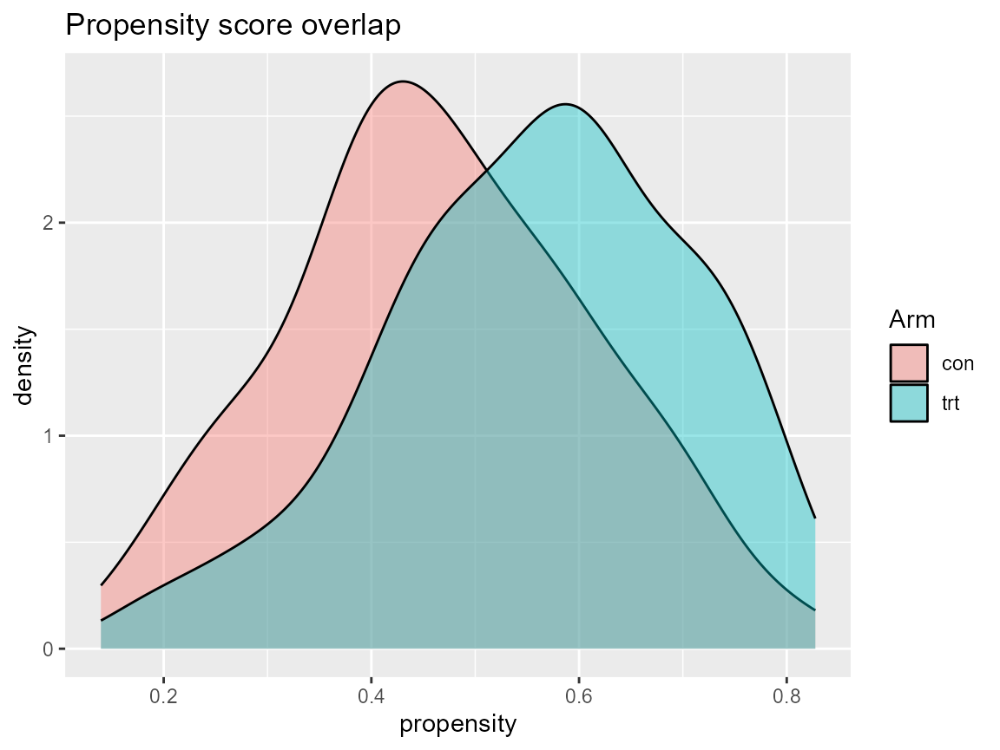
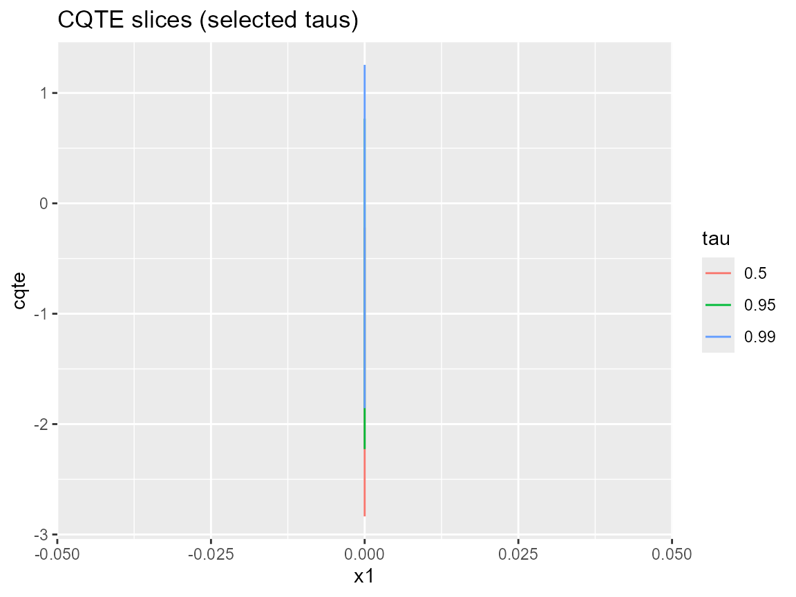
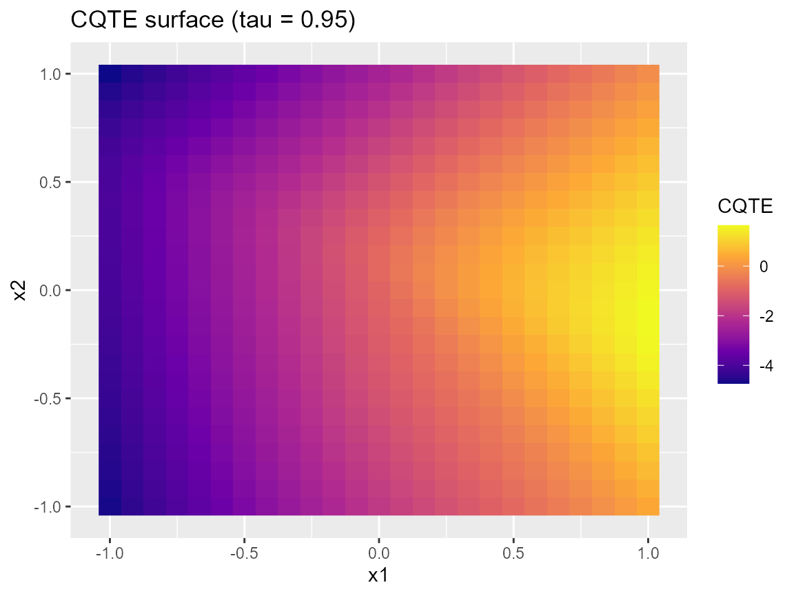

Causal Inference with DPmixGPD: CQTE End-to-End
Source:vignettes/v05-causal-cqte.Rmd
v05-causal-cqte.RmdWhat you’ll learn: how to encode causal assumptions, build a causal bundle, diagnose overlap, and compute conditional quantile treatment effects (CQTEs) that spotlight tail differences.
5.1 Setup and assumptions
- We model treated (
T=1) and control (T=0) potential outcomes separately and adjust for covariates via a propensity score. - Overlap (positivity) is essential: each arm needs support across the covariate space.
- Causality still rests on no unmeasured confounding; the DP mixture / GPD tail machinery simply learns flexible outcome distributions.
5.2 Data format
Requires:
-
youtcome. -
Tbinary treatment indicator. -
Xcovariate matrix/data frame (columnsx1,x2,x3in our examples).
5.3 Workflow overview
- Propensity score stage (
T | X). - Outcome model for
Y | X, T=0andY | X, T=1, each a DP mixture + optional GPD. - Predictions per arm at new covariate grids.
- CQTE = quantile(trt) - quantile(con) for each probability and covariate slice.
5.4 Minimal causal example
set.seed(101)
dat <- sim_causal_cqte(220)
J <- 6
bundle <- build_causal_bundle(
y = dat$y,
X = dat$X,
T = dat$t,
backend = c("sb", "sb"),
kernel = c("normal", "normal"),
GPD = c(FALSE, FALSE),
J = c(J, J),
mcmc_outcome = list(niter = 200, nburnin = 50, thin = 1, nchains = 2, seed = c(1, 2)),
mcmc_ps = list(niter = 200, nburnin = 50, thin = 1, nchains = 2, seed = c(3, 4))
)
if (use_cached_fit) {
cf <- fit_causal_small
} else {
cf <- run_mcmc_causal(bundle, show_progress = FALSE)
}
print(cf)
#> DPmixGPD causal fit
#> PS model: Bayesian logit (T | X)
#> Outcome (treated): backend = sb | kernel = normal
#> Outcome (control): backend = sb | kernel = normal
#> GPD tail (treated/control): FALSE / FALSE
summary(cf$outcome_fit$trt)
#> MixGPD summary | backend: Stick-Breaking Process | kernel: Normal Distribution | GPD tail: FALSE | epsilon: 0.025
#> n = 64 | components = 4
#> Summary
#> Initial components: 4 | Components after truncation: 4
#>
#> Summary table
#> parameter mean sd q0.025 q0.500 q0.975 ess
#> weights[1] 0.908 0.156 0.504 0.984 1.000 2.877
#> weights[2] 0.158 0.158 0.031 0.062 0.425 1.488
#> weights[3] 0.044 0.012 0.031 0.047 0.062 10.000
#> weights[4] 0.038 0.009 0.031 0.031 0.047 5.000
#> alpha 0.825 0.711 0.196 0.490 2.698 7.769
#> beta_mean[1, 1] 2.259 0.685 1.010 2.237 3.620 19.662
#> beta_mean[2, 1] 0.141 2.026 -2.592 -0.101 4.693 6.047
#> beta_mean[3, 1] -0.537 1.546 -3.474 -0.353 2.075 12.519
#> beta_mean[4, 1] 0.426 2.224 -3.552 0.618 4.758 2.862
#> beta_mean[1, 2] 1.516 0.849 0.061 1.462 3.589 14.244
#> beta_mean[2, 2] -0.192 1.535 -2.666 -0.188 3.065 8.873
#> beta_mean[3, 2] -0.194 2.500 -4.215 -0.040 4.058 3.244
#> beta_mean[4, 2] -1.316 1.797 -3.658 -1.749 2.432 8.851
#> beta_mean[1, 3] 1.826 1.000 -0.333 1.777 3.633 9.688
#> beta_mean[2, 3] -0.953 1.234 -3.041 -0.904 1.439 7.933
#> beta_mean[3, 3] -0.424 1.497 -2.574 -0.764 2.667 9.761
#> beta_mean[4, 3] -1.307 1.520 -3.185 -1.678 1.943 6.690
#> sd[1] 0.030 0.007 0.022 0.029 0.041 73.257
#> sd[2] 0.832 1.005 0.033 0.425 3.162 5.904
#> sd[3] 2.131 1.367 0.881 1.714 4.999 10.000
#> sd[4] 1.714 2.131 0.418 0.668 5.052 5.000For vignette speed the cached fit uses a normal kernel with
GPD = FALSE. In practice, switch kernel and
GPD to match your outcome support and tail goals.
5.5 Diagnostics
Overlap / positivity
ps_df <- data.frame(dat$X, T = dat$t)
ps_fit <- glm(T ~ x1 + x2 + x3, data = ps_df, family = binomial())
ps_df$propensity <- predict(ps_fit, type = "response")
ggplot(ps_df, aes(x = propensity, fill = factor(T, labels = c("con", "trt")))) +
geom_density(alpha = 0.4) +
labs(title = "Propensity score overlap", fill = "Arm")
Propensity score distributions by arm (logistic GLM proxy).
5.6 CQTE estimation and plotting
grid <- expand.grid(
x1 = seq(-1.2, 1.2, length.out = 15),
x2 = seq(-0.8, 0.8, length.out = 5),
x3 = 0
)
taus <- c(.1, .5, .9, .95, .99)
pr_trt <- predict(cf$outcome_fit$trt, newdata = grid, type = "quantile", p = taus)
pr_con <- predict(cf$outcome_fit$con, newdata = grid, type = "quantile", p = taus)
cqte_df <- data.frame(
x1 = rep(grid$x1, each = length(taus)),
tau = rep(taus, times = nrow(grid)),
cqte = c(pr_trt$fit - pr_con$fit)
)
slice_df <- cqte_df[cqte_df$tau %in% c(.5, .95, .99) & cqte_df$x1 %in% c(-1, 0, 1), ]
ggplot(slice_df, aes(x = x1, y = cqte, color = factor(tau))) +
geom_line() +
labs(title = "CQTE slices (selected taus)", color = "tau")
surf_grid <- expand.grid(x1 = seq(-1, 1, length.out = 25), x2 = seq(-1, 1, length.out = 25), x3 = 0)
tau_surface <- 0.95
surf_trt <- predict(cf$outcome_fit$trt, newdata = surf_grid, type = "quantile", p = tau_surface)
surf_con <- predict(cf$outcome_fit$con, newdata = surf_grid, type = "quantile", p = tau_surface)
surf_grid$cqte <- as.numeric(surf_trt$fit - surf_con$fit)
ggplot(surf_grid, aes(x = x1, y = x2, fill = cqte)) +
geom_raster() +
scale_fill_viridis_c(option = "C") +
labs(title = "CQTE surface (tau = 0.95)", fill = "CQTE")
CQTE surface for tau=0.95 varying x1 / x2 at x3=0.
tail_cqte <- predict(cf$outcome_fit$trt, newdata = data.frame(x1 = 0, x2 = 0, x3 = 0), type = "quantile", p = c(.95, .99, .995))
control_tail <- predict(cf$outcome_fit$con, newdata = data.frame(x1 = 0, x2 = 0, x3 = 0), type = "quantile", p = c(.95, .99, .995))
data.frame(
tau = c(.95, .99, .995),
cqte = tail_cqte$fit - control_tail$fit
)
#> tau cqte.1 cqte.2 cqte.3
#> 1 0.950 -0.9250932 -2.533016 -3.05655
#> 2 0.990 -0.9250932 -2.533016 -3.05655
#> 3 0.995 -0.9250932 -2.533016 -3.056555.7 Interpretation guidance
- Differences near the median (
tau ~ 0.5) reflect central CFTE; tail differences (tau >= 0.95) highlight extreme treatment effects. - Credible intervals widen where data are sparse???this is expected and flags caution, not failure.
- Try alternative kernels or toggle
GPDper arm (e.g.,GPD = c(TRUE, FALSE)) when shape estimates blow up.
Summary table of CQTE
summary_points <- data.frame(
x1 = c(-1, 0, 1),
x2 = c(0, 0, 0),
label = c("x1 = -1, x2 = 0", "x1 = 0, x2 = 0", "x1 = 1, x2 = 0"),
cqte_median = NA_real_,
cqte_tail = NA_real_
)
for (i in seq_len(nrow(summary_points))) {
newdata <- data.frame(x1 = summary_points$x1[i], x2 = summary_points$x2[i], x3 = 0)
med <- predict(cf$outcome_fit$trt, newdata = newdata, type = "quantile", p = 0.5)$fit
med_con <- predict(cf$outcome_fit$con, newdata = newdata, type = "quantile", p = 0.5)$fit
tail <- predict(cf$outcome_fit$trt, newdata = newdata, type = "quantile", p = 0.95)$fit
tail_con <- predict(cf$outcome_fit$con, newdata = newdata, type = "quantile", p = 0.95)$fit
summary_points$cqte_median[i] <- med - med_con
summary_points$cqte_tail[i] <- tail - tail_con
}
knitr::kable(summary_points[, c("label", "cqte_median", "cqte_tail")], digits = 3)| label | cqte_median | cqte_tail |
|---|---|---|
| x1 = -1, x2 = 0 | -2.112 | -4.072 |
| x1 = 0, x2 = 0 | 0.000 | -0.925 |
| x1 = 1, x2 = 0 | 2.112 | 1.591 |
Session info
sessionInfo()
#> R version 4.5.2 (2025-10-31 ucrt)
#> Platform: x86_64-w64-mingw32/x64
#> Running under: Windows 11 x64 (build 26100)
#>
#> Matrix products: default
#> LAPACK version 3.12.1
#>
#> locale:
#> [1] LC_COLLATE=English_United States.utf8
#> [2] LC_CTYPE=English_United States.utf8
#> [3] LC_MONETARY=English_United States.utf8
#> [4] LC_NUMERIC=C
#> [5] LC_TIME=English_United States.utf8
#>
#> time zone: America/New_York
#> tzcode source: internal
#>
#> attached base packages:
#> [1] stats graphics grDevices datasets utils methods base
#>
#> other attached packages:
#> [1] dplyr_1.1.4 ggplot2_4.0.1 nimble_1.4.0 DPmixGPD_0.0.8
#>
#> loaded via a namespace (and not attached):
#> [1] tidyr_1.3.2 sass_0.4.10 future_1.68.0
#> [4] generics_0.1.4 renv_1.1.5 lattice_0.22-7
#> [7] listenv_0.10.0 pracma_2.4.6 digest_0.6.39
#> [10] magrittr_2.0.4 evaluate_1.0.5 grid_4.5.2
#> [13] RColorBrewer_1.1-3 fastmap_1.2.0 jsonlite_2.0.0
#> [16] GGally_2.4.0 purrr_1.2.0 viridisLite_0.4.2
#> [19] scales_1.4.0 codetools_0.2-20 numDeriv_2016.8-1.1
#> [22] textshaping_1.0.4 jquerylib_0.1.4 cli_3.6.5
#> [25] rlang_1.1.6 parallelly_1.46.0 future.apply_1.20.1
#> [28] withr_3.0.2 cachem_1.1.0 yaml_2.3.12
#> [31] otel_0.2.0 tools_4.5.2 parallel_4.5.2
#> [34] coda_0.19-4.1 globals_0.18.0 ggstats_0.11.0
#> [37] vctrs_0.6.5 R6_2.6.1 lifecycle_1.0.4
#> [40] fs_1.6.6 htmlwidgets_1.6.4 MASS_7.3-65
#> [43] ragg_1.5.0 pkgconfig_2.0.3 desc_1.4.3
#> [46] pillar_1.11.1 pkgdown_2.2.0 bslib_0.9.0
#> [49] gtable_0.3.6 glue_1.8.0 systemfonts_1.3.1
#> [52] tidyselect_1.2.1 tibble_3.3.0 xfun_0.55
#> [55] rstudioapi_0.17.1 knitr_1.51 farver_2.1.2
#> [58] htmltools_0.5.9 igraph_2.2.1 labeling_0.4.3
#> [61] rmarkdown_2.30 compiler_4.5.2 S7_0.2.1
#> [64] ggmcmc_1.5.1.2